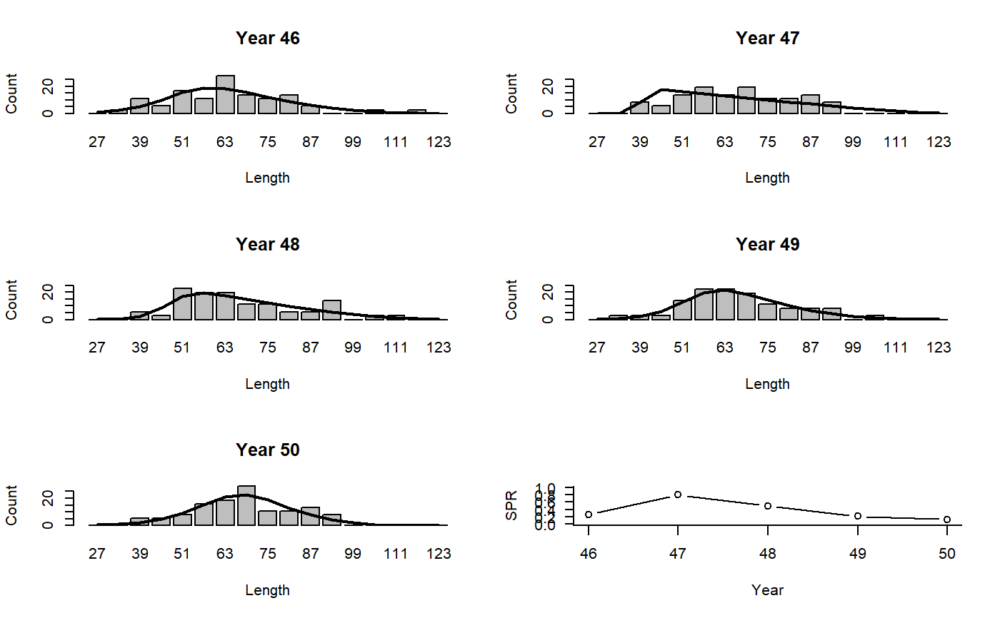

LBSPR.RdThe spawning potential ratio (SPR) is estimated using the LBSPR method and compared to a target of 0.4.
LBSPR(x, Data, reps = 1, plot = FALSE, SPRtarg = 0.4, theta1 = 0.3, theta2 = 0.05, maxchange = 0.3, n = 5, smoother = TRUE, R = 0.2) LBSPR_MLL(x, Data, reps = 1, plot = FALSE, SPRtarg = 0.4, n = 5, smoother = TRUE, R = 0.2)
| x | A position in a data-limited methods data object |
|---|---|
| Data | A data-limited methods data object |
| reps | The number of stochastic samples of the MP recommendation(s) |
| plot | Logical. Show the plot? |
| SPRtarg | The target SPR |
| theta1 | Control parameter for the harvest control rule |
| theta2 | Control parameter for the harvest control rule |
| maxchange | Maximum change in effort |
| n | Last number of years to run the model on. |
| smoother | Logical. Should the SPR estimates be smoothed? |
| R | variance of sampling noise for smoother |
An object of class Rec with the TAE slot(s) populated
Effort is modified according to the harvest control rules described in Hordyk et al. (2015b):
LBSPR_MLL: Fishing retention-at-length is set equivalent to slightly
higher than the maturity curve if SPR < 0.4
See Data for information on the Data object
LBSPR: CAL, CAL_bins, L50, L95, LHYear, Mort, Year, vbK, vbLinf, wlb
See Online Documentation for correctly rendered equations
Hordyk, A., Ono, K., Valencia, S., loneragan, N., and Prince J (2015a). A novel length-based empirical estimation method of spawning potential ratio (SPR), and tests of its performance, for small-scale, data-poor fisheries, ICES Journal of Marine Science, 72 (1), 217-231
Hordyk, A. R., Loneragan, N. R., & Prince, J. D. (2015b). An evaluation of an iterative harvest strategy for data-poor fisheries using the length-based spawning potential ratio assessment methodology. Fisheries Research, 171, 20–32. https://doi.org/10.1016/j.fishres.2014.12.018
#> Effort #> 0.964363#> LR5 LFR #> 83.89029 88.30557